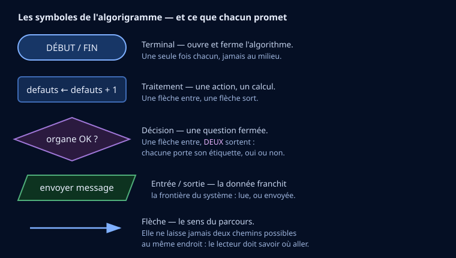
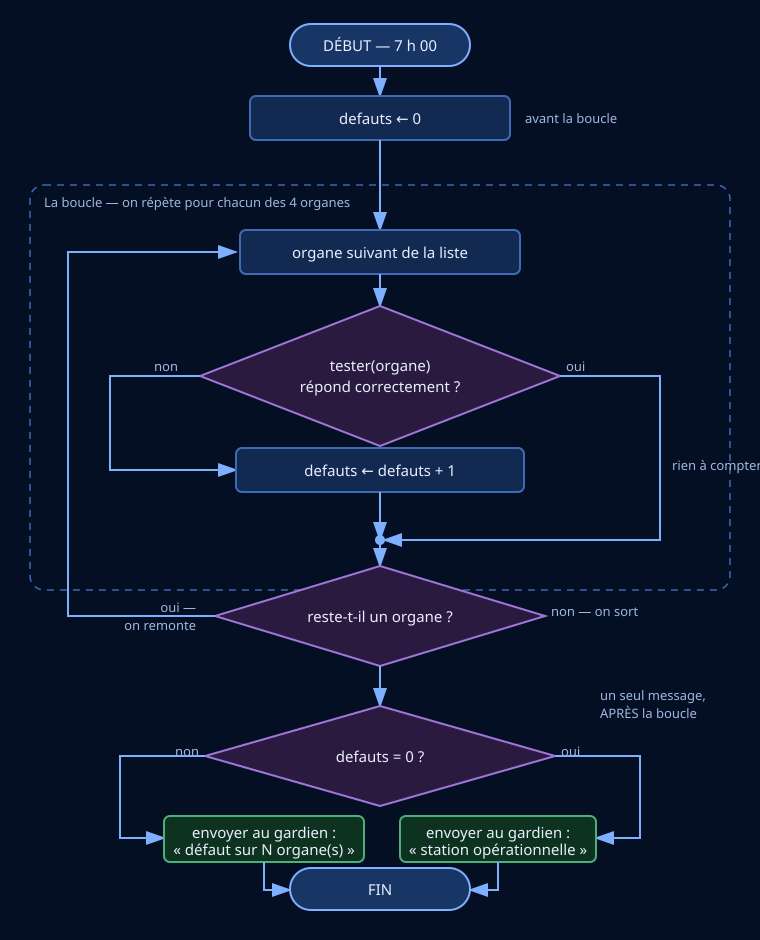
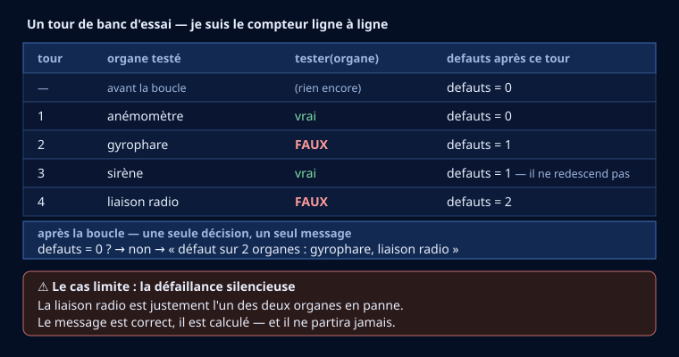

🧠 Entraînement DNB — lire et interpréter un algorigramme
30 exercices en 4 manches · corrections qui expliquent chaque réponse fausse
3eEntraînement — brevetThème 2 · ressource d'entraînement, pas une séquence
Tes réponses sont enregistrées dans ce navigateur uniquement :
rien n'est envoyé, personne d'autre ne les voit. Le mode essentiel masque les corrections
et les compléments si la page te paraît chargée.
0 / 4 manches validées
📚 Rappel de cours — algorithme et algorigramme
Un algorithme est une suite ordonnée d'instructions qui résout un problème.
On peut l'exécuter pas à pas, sans rien deviner.
Un algorigramme en est la représentation graphique. Il utilise cinq symboles
normalisés, et cinq seulement :
Terminal (arrondi) : DÉBUT et FIN, une seule fois chacun.
Rectangle : un traitement — une flèche entre, une flèche sort.
Losange : une décision — une flèche entre, deux sortent, étiquetées.
Parallélogramme : une entrée ou une sortie de donnée.
Flèche : le sens du parcours, sans ambiguïté.

📷 Les cinq symboles, et ce que chacun promet
Trois structures suffisent à tout écrire : la séquence (les instructions
s'enchaînent), la condition (SI … ALORS … SINON) et la boucle (TANT QUE).
🎯 Comment travailler cette page
Réponds d'abord sans ouvrir la correction : c'est le seul moyen de savoir ce que
tu sais vraiment.
Ouvre ensuite la correction, même quand tu as juste. Elle explique pourquoi chacune
des trois autres réponses est fausse — et c'est là que se joue la note au brevet, parce que les
distracteurs du DNB sont conçus pour être plausibles.
Deux aides sont disponibles avant chaque correction. La première remet sur la piste, la
seconde explique le raisonnement complet. Les utiliser n'est pas tricher.
Manche 1 — Le vocabulaire et les symboles
Ce qu'on doit savoir nommer avant de savoir lire. 8 exercices.
Chaque réponse fausse est expliquée dans la correction : c'est là que se trouve
l'essentiel du travail, bien plus que dans le score.
Exercice 1 — Ce qu'est un algorithme
💡 Aide de niveau 1
Pense à une recette de cuisine : des étapes, dans un ordre, qui mènent à un résultat.
💡💡 Aide de niveau 2
Deux mots comptent : « ordonnée » (l'ordre change le résultat) et « instructions » (des actions précises, sans ambiguïté).
📖 Correction (à ouvrir APRÈS avoir vérifié)
Réponse attendue : une suite ordonnée d'instructions qui résout un problème, exécutable pas à pas
Pourquoi les autres sont fausses :
A. un programme écrit en Python — Python est UN langage possible ; un algorithme existe avant tout langage, et peut se dire en français.
C. un dessin technique coté — Le dessin coté décrit une pièce dans l'espace. L'algorithme décrit un enchaînement dans le temps.
D. le nom d'un composant électronique — Aucun composant ne s'appelle ainsi : c'est une méthode, pas un objet.
🧠 À retenir : Un algorithme = des instructions, dans un ordre, pour résoudre un problème.
Exercice 2 — Le losange
📷 Document à lire pour répondre
💡 Aide de niveau 1
Compte les flèches qui sortent du symbole : c'est le seul qui en a deux.
💡💡 Aide de niveau 2
Le losange fait bifurquer le parcours. Ses deux sorties portent obligatoirement une étiquette, sinon le lecteur ne sait pas où aller.
📖 Correction (à ouvrir APRÈS avoir vérifié)
Réponse attendue : à poser une question fermée : une flèche entre, deux sorties étiquetées oui et non
Pourquoi les autres sont fausses :
B. à afficher un résultat à l'écran — L'affichage est une sortie de donnée : c'est le parallélogramme.
C. à marquer le début de l'algorithme — Le début se marque avec un terminal arrondi, qui n'apparaît qu'une fois.
D. à écrire un calcul — Un calcul est un traitement : il va dans un rectangle, avec une seule sortie.
🧠 À retenir : Losange = une question, deux sorties étiquetées.
Exercice 3 — Début et fin
💡 Aide de niveau 1
C'est le seul symbole aux bords arrondis.
💡💡 Aide de niveau 2
Il apparaît exactement deux fois : une pour DÉBUT, une pour FIN. Jamais au milieu du parcours.
📖 Correction (à ouvrir APRÈS avoir vérifié)
Réponse attendue : le terminal, un rectangle aux extrémités arrondies
Pourquoi les autres sont fausses :
A. le losange — Le losange pose une question ; il ne peut ni ouvrir ni fermer l'algorithme.
B. le parallélogramme — Le parallélogramme sert aux entrées et aux sorties de données.
C. le rectangle — Le rectangle porte un traitement, au milieu du parcours.
🧠 À retenir : Terminal arrondi = DÉBUT et FIN, une fois chacun.
Exercice 4 — Le parallélogramme
💡 Aide de niveau 1
Demande-toi si la donnée reste à l'intérieur du système ou si elle en sort.
💡💡 Aide de niveau 2
Entrée (lire un capteur) et sortie (afficher, envoyer) utilisent le même symbole : la donnée traverse la frontière.
📖 Correction (à ouvrir APRÈS avoir vérifié)
Réponse attendue : un parallélogramme : la donnée franchit la frontière du système
Pourquoi les autres sont fausses :
A. un terminal — Le terminal ne sert qu'à ouvrir et fermer l'algorithme.
B. un losange — Aucune question n'est posée : on ne choisit rien.
D. un rectangle — Le rectangle sert aux traitements internes : un calcul, une affectation. Ici la donnée SORT du système.
🧠 À retenir : Parallélogramme = entrée ou sortie de donnée.
Exercice 5 — Ce qu'est une variable
💡 Aide de niveau 1
Imagine une boîte étiquetée : l'étiquette est le nom, le contenu peut être remplacé.
💡💡 Aide de niveau 2
Écrire « compteur ← 0 » crée la boîte et y met 0. Écrire « compteur ← compteur + 1 » remplace le contenu par l'ancien plus un.
📖 Correction (à ouvrir APRÈS avoir vérifié)
Réponse attendue : une case mémoire qui porte un nom et dont le contenu peut changer
Pourquoi les autres sont fausses :
A. une valeur fixée une fois pour toutes — Cela, c'est une constante. La variable, elle, varie — c'est son nom qui le dit.
C. un composant de la carte électronique — C'est une notion logicielle : rien de physique n'est ajouté à la carte.
D. une erreur de programmation — Aucun rapport : une variable est un outil normal de tout programme.
🧠 À retenir : Variable = un nom, un contenu qui peut changer.
Exercice 6 — Le mot-clé de départ
💡 Aide de niveau 1
Le mot-clé de départ correspond au terminal arrondi de l'algorigramme.
💡💡 Aide de niveau 2
La paire DÉBUT / FIN encadre tout le reste : les déclarations de variables viennent juste après DÉBUT.
📖 Correction (à ouvrir APRÈS avoir vérifié)
Réponse attendue : DÉBUT
Pourquoi les autres sont fausses :
B. AFFICHER — AFFICHER est une instruction de sortie, qui peut se trouver n'importe où.
C. SI — SI ouvre une condition, à l'intérieur de l'algorithme, pas l'algorithme lui-même.
D. TANT QUE — TANT QUE ouvre une boucle, elle aussi à l'intérieur.
🧠 À retenir : DÉBUT ouvre, FIN ferme.
Exercice 7 — Le mot-clé de répétition
💡 Aide de niveau 1
Cherche le mot qui suppose qu'on revienne en arrière.
💡💡 Aide de niveau 2
Dans l'algorigramme, la répétition se voit à la flèche de retour qui remonte vers un symbole déjà traversé.
📖 Correction (à ouvrir APRÈS avoir vérifié)
Réponse attendue : TANT QUE
Pourquoi les autres sont fausses :
A. SI … ALORS — SI choisit entre deux chemins, une seule fois : il ne répète rien.
B. SINON — SINON est la deuxième branche d'un SI, pas une répétition.
C. AFFICHER — AFFICHER produit une sortie ; il ne dit rien de la répétition.
🧠 À retenir : TANT QUE = répétition ; SI = choix.
Exercice 8 — L'ordre de lecture
💡 Aide de niveau 1
On lit un algorigramme comme un texte : dans le sens des flèches.
💡💡 Aide de niveau 2
L'ordre EST le sens de l'algorithme : inverser deux instructions change le résultat. C'est pour cela qu'une flèche ne doit jamais laisser deux chemins possibles au même endroit.
📖 Correction (à ouvrir APRÈS avoir vérifié)
Réponse attendue : de haut en bas, en suivant les flèches
Pourquoi les autres sont fausses :
A. dans un ordre choisi par la machine — La machine n'invente rien : c'est le tracé des flèches qui impose l'ordre.
B. de la fin vers le début — Ce serait illisible — et le résultat n'aurait aucun sens.
D. une instruction sur deux — Toutes les instructions du chemin parcouru sont exécutées.
🧠 À retenir : On suit les flèches, de haut en bas.
Manche 2 — Lire et dérouler
On suit les flèches, on note ce que devient chaque variable. 8 exercices.
Chaque réponse fausse est expliquée dans la correction : c'est là que se trouve
l'essentiel du travail, bien plus que dans le score.
Exercice 9 — Lire un algorithme simple
DÉBUT
Lire A
Lire B
S ← A + B
Afficher S
FIN
💡 Aide de niveau 1
Lis la ligne « S ← A + B » : quel signe y figure ?
💡💡 Aide de niveau 2
Trois temps : deux entrées (Lire A, Lire B), un traitement (l'addition), une sortie (Afficher S). C'est le schéma de base entrée → traitement → sortie.
📖 Correction (à ouvrir APRÈS avoir vérifié)
Réponse attendue : il lit deux nombres et affiche leur somme
Pourquoi les autres sont fausses :
A. il affiche toujours 0 — Non : S reçoit A + B, dont la valeur dépend de ce qui a été lu.
C. il lit deux nombres et affiche le plus grand — Aucune comparaison n'apparaît : il n'y a ni SI ni losange.
D. il ne fait rien tant qu'on n'appuie pas sur un bouton — Aucune attente n'est écrite : l'algorithme se déroule dès le DÉBUT.
🧠 À retenir : Un algorithme se lit ligne à ligne, en suivant ce que devient chaque variable.
Exercice 10 — Interpréter une condition
SI x > 10 ALORS
Afficher « Grand »
SINON
Afficher « Petit »
FIN SI
💡 Aide de niveau 1
Compare très exactement le signe écrit et la valeur donnée.
💡💡 Aide de niveau 2
C'est le piège classique du DNB : la valeur qui tombe pile sur le seuil. « > » exclut l'égalité, « ≥ » l'inclut. Un seul caractère change la réponse.
📖 Correction (à ouvrir APRÈS avoir vérifié)
Réponse attendue : « Petit », car 10 n'est pas strictement supérieur à 10
Pourquoi les autres sont fausses :
B. les deux, l'un après l'autre — Les deux branches d'un SI s'excluent : on n'en prend jamais qu'une.
C. rien du tout — Un SI … SINON affiche toujours quelque chose : l'une des deux branches est prise.
D. « Grand », car x vaut 10 — Le test demande x > 10, pas x ≥ 10 : à égalité, il est faux.
🧠 À retenir : À la limite exacte, tout se joue sur > ou ≥.
Exercice 11 — La valeur finale (1)
A ← 5
A ← A + 7
💡 Aide de niveau 1
Remplace A par sa valeur du moment dans le membre de droite, puis calcule.
💡💡 Aide de niveau 2
La flèche ← se lit « reçoit ». On calcule d'abord la droite avec l'ancienne valeur (5 + 7 = 12), puis on range le résultat dans A.
📖 Correction (à ouvrir APRÈS avoir vérifié)
Réponse attendue : 12
Pourquoi les autres sont fausses :
A. 7 — 7 est la valeur ajoutée, pas le résultat.
B. 5 — 5 est la valeur de départ : elle est remplacée dès la deuxième ligne.
C. 57 — Il s'agit d'une addition, pas d'une mise bout à bout des chiffres.
🧠 À retenir : A ← A + 7 : on calcule à droite, on range à gauche.
Exercice 12 — La valeur finale (2)
n ← 3
n ← n × 2
n ← n − 0
💡 Aide de niveau 1
Traite les lignes une par une, en notant la valeur de n après chacune.
💡💡 Aide de niveau 2
Ligne 1 : n = 3. Ligne 2 : n = 3 × 2 = 6. Ligne 3 : n = 6 − 0 = 6. Un tableau de suivi à trois lignes évite toute erreur.
📖 Correction (à ouvrir APRÈS avoir vérifié)
Réponse attendue : 6
Pourquoi les autres sont fausses :
A. 0 — Rien ne remet n à zéro dans cet algorithme.
B. 9 — 9 serait le résultat si la dernière ligne était n ← n + 3.
D. 3 — 3 est la valeur de départ, écrasée par la suite.
🧠 À retenir : Un tableau de suivi coûte trente secondes et fait gagner tous les points.
Exercice 13 — Le nombre de répétitions
i ← 1
TANT QUE i ≤ 5 FAIRE
Afficher i
i ← i + 1
FIN TANT QUE
💡 Aide de niveau 1
Écris la liste des valeurs prises par i, puis compte-les.
💡💡 Aide de niveau 2
Le nombre de tours dépend de trois choses : la valeur de départ, le test, et le pas d'incrémentation. Changer l'une des trois change le compte.
📖 Correction (à ouvrir APRÈS avoir vérifié)
Réponse attendue : 5 fois, pour i valant 1, 2, 3, 4 puis 5
Pourquoi les autres sont fausses :
A. 6 fois — i part de 1, pas de 0 : il n'y a pas de sixième tour.
C. 4 fois — Ce serait le cas avec i < 5. Ici le test est i ≤ 5, donc 5 passe aussi.
D. une seule fois — La flèche de retour ramène au test tant qu'il est vrai.
🧠 À retenir : Compter les tours, c'est lister les valeurs — jamais les deviner.
Exercice 14 — La boucle qui ne tourne jamais
i ← 10
TANT QUE i < 5 FAIRE
Afficher i
i ← i + 1
FIN TANT QUE
💡 Aide de niveau 1
Évalue le test avec la valeur de départ, avant toute chose.
💡💡 Aide de niveau 2
TANT QUE teste d'abord. Si la condition est fausse au départ, le bloc n'est jamais exécuté — et c'est un comportement normal, pas un bogue.
📖 Correction (à ouvrir APRÈS avoir vérifié)
Réponse attendue : aucune : le test est faux dès le premier passage
Pourquoi les autres sont fausses :
B. indéfiniment — Il faudrait que le test reste vrai ; ici il est faux d'emblée.
C. une fois, car on entre toujours au moins une fois — Faux pour TANT QUE : le test est évalué AVANT d'entrer.
D. dix fois — Aucun compteur ne va jusqu'à dix dans cet algorithme.
🧠 À retenir : TANT QUE peut tourner zéro fois.
Exercice 15 — La boucle sans fin
i ← 1
TANT QUE i ≤ 5 FAIRE
Afficher i
FIN TANT QUE
💡 Aide de niveau 1
Cherche l'instruction qui devrait modifier la variable du test.
💡💡 Aide de niveau 2
Toute boucle a besoin de trois éléments : une initialisation, un test, et une progression vers la sortie. Ici la progression manque : c'est l'erreur de boucle infinie.
📖 Correction (à ouvrir APRÈS avoir vérifié)
Réponse attendue : la boucle ne s'arrête jamais : rien ne fait avancer i
Pourquoi les autres sont fausses :
A. elle ne s'exécute pas — Le test est vrai au départ : on entre bien dans la boucle.
B. elle affiche 1 puis s'arrête — Après l'affichage, la flèche de retour ramène au test, toujours vrai.
C. elle s'exécute cinq fois — Il faudrait que i augmente ; or i garde la valeur 1.
🧠 À retenir : Une boucle sans progression vers sa sortie ne s'arrête jamais.
Exercice 16 — Remettre dans l'ordre
💡 Aide de niveau 1
Demande-toi, pour chaque étape, ce qui doit être vrai avant de pouvoir la faire.
💡💡 Aide de niveau 2
C'est la propriété essentielle : un algorithme est une suite ORDONNÉE. Permuter deux étapes donne un autre résultat — parfois aucun résultat.
📖 Correction (à ouvrir APRÈS avoir vérifié)
Réponse attendue : faire chauffer l'eau → mettre le sachet → verser l'eau → attendre → retirer le sachet
Pourquoi les autres sont fausses :
A. attendre → mettre le sachet → verser l'eau → faire chauffer — Attendre avant d'avoir commencé quoi que ce soit ne sert à rien.
B. mettre le sachet → retirer le sachet → verser l'eau → attendre — On retire le sachet avant d'avoir versé l'eau : l'infusion n'a pas lieu.
D. verser l'eau → faire chauffer l'eau → mettre le sachet — L'eau est versée avant d'être chaude : le résultat n'est pas le même.
🧠 À retenir : L'ordre fait partie de l'algorithme, il n'est pas décoratif.
Manche 3 — Compteurs, tests et cas limites
Là où se perdent les points au brevet. 6 exercices.
Chaque réponse fausse est expliquée dans la correction : c'est là que se trouve
l'essentiel du travail, bien plus que dans le score.
Exercice 17 — Où initialiser un compteur

📷 Document à lire pour répondre
💡 Aide de niveau 1
Demande-toi ce que vaudrait le compteur si l'instruction était répétée à chaque tour.
💡💡 Aide de niveau 2
C'est l'erreur la plus fréquente, et la plus discrète : le programme fonctionne, ne plante pas, et donne un résultat faux. Le tableau de suivi la révèle immédiatement.
📖 Correction (à ouvrir APRÈS avoir vérifié)
Réponse attendue : avant la boucle : le compteur doit exister avant qu'on commence à compter
Pourquoi les autres sont fausses :
A. après la boucle — Trop tard : on aurait déjà essayé d'ajouter 1 à une case qui n'existe pas.
C. à l'intérieur de la boucle, à la fin — Pire encore : il effacerait le comptage juste après l'avoir fait.
D. à l'intérieur de la boucle, au début — Il repartirait de zéro à chaque tour : le total final ne vaudrait jamais plus de 1.
🧠 À retenir : Un compteur s'initialise AVANT la boucle.
Exercice 18 — Le compteur ne redescend pas

📷 Document à lire pour répondre
💡 Aide de niveau 1
Regarde ce que fait la branche « l'organe fonctionne » : ajoute-t-elle quelque chose ?
💡💡 Aide de niveau 2
La branche du oui ne contient aucune instruction : elle rejoint simplement la suite. Un compteur ne diminue que si une instruction le lui demande explicitement.
📖 Correction (à ouvrir APRÈS avoir vérifié)
Réponse attendue : toujours 1 : un organe qui marche n'efface pas un défaut déjà trouvé
Pourquoi les autres sont fausses :
B. cela dépend de l'ordre des organes — Une addition ne dépend pas de l'ordre : le total est le même.
C. 2, puisqu'on continue à compter — On ne compte que les défauts : un organe correct n'ajoute rien.
D. 0, puisque le dernier organe est bon — Le compteur mémorise le total, pas le dernier résultat.
🧠 À retenir : Un compteur garde ce qu'il a compté.
Exercice 19 — Où placer la décision finale
💡 Aide de niveau 1
Demande-toi à quel moment précis on connaît le total.
💡💡 Aide de niveau 2
La règle générale : une conclusion se place là où l'information nécessaire est complète. Tant que la boucle tourne, le total n'est pas connu.
📖 Correction (à ouvrir APRÈS avoir vérifié)
Réponse attendue : après la boucle : on ne peut conclure qu'une fois tous les organes testés
Pourquoi les autres sont fausses :
A. dans la branche « organe en panne » — Le message ne partirait que s'il y a un défaut, et autant de fois qu'il y en a.
B. avant la boucle — À ce moment-là le compteur vaut toujours 0 : le message serait systématiquement le même.
C. à l'intérieur de la boucle — Le destinataire recevrait un message par organe, au lieu d'un seul.
🧠 À retenir : On conclut après la boucle, une seule fois.
Exercice 20 — Traduire une condition
💡 Aide de niveau 1
« Au moins un » veut dire un, deux, trois… mais pas zéro.
💡💡 Aide de niveau 2
Sur des entiers, defauts > 0 et defauts ≥ 1 sont équivalents. Sur des nombres décimaux, ils ne le seraient plus : la nature de la donnée compte.
📖 Correction (à ouvrir APRÈS avoir vérifié)
Réponse attendue : defauts > 0
Pourquoi les autres sont fausses :
A. defauts < 0 — Un compteur ne descend jamais sous zéro : ce test serait toujours faux.
B. defauts ≥ 1 ou defauts = 0 — La deuxième partie rend le test toujours vrai, quel que soit le compteur.
D. defauts = 0 — C'est l'inverse exact : aucun défaut.
🧠 À retenir : « Au moins un » = strictement supérieur à zéro.
Exercice 21 — L'indentation
💡 Aide de niveau 1
Compare avec l'algorigramme : qu'est-ce qui, là-bas, dit la même chose ?
💡💡 Aide de niveau 2
Ce que l'indentation dit dans le texte, la flèche de retour le dit dans l'algorigramme : elle délimite le bloc répété. Déplacer une ligne d'un cran change le programme.
📖 Correction (à ouvrir APRÈS avoir vérifié)
Réponse attendue : à montrer quelles instructions sont à l'intérieur de la boucle
Pourquoi les autres sont fausses :
A. à indiquer les commentaires — Les commentaires se signalent autrement, pas par un décalage.
C. à rendre le texte plus joli — C'est un effet secondaire, pas la raison : le décalage porte une information.
D. à faire ralentir le programme — L'indentation ne change rien à la vitesse d'exécution.
🧠 À retenir : L'indentation porte du sens : elle délimite le bloc répété.
Exercice 22 — Le cas limite
💡 Aide de niveau 1
Demande-toi par quel chemin physique le message doit passer.
💡💡 Aide de niveau 2
C'est la limite d'un auto-test : il ne peut pas signaler la panne de son propre moyen de signalement. Le remède ne s'écrit pas dans la boucle — c'est le destinataire qui doit s'inquiéter de l'ABSENCE de message.
📖 Correction (à ouvrir APRÈS avoir vérifié)
Réponse attendue : le message est calculé correctement mais ne part jamais : la panne est silencieuse
Pourquoi les autres sont fausses :
B. le message part quand même — Le canal est justement l'organe défaillant : il ne peut rien transmettre.
C. la station se répare toute seule — Aucun algorithme ne répare un matériel défectueux.
D. l'algorithme s'arrête sur une erreur — Rien dans l'algorithme n'impose l'arrêt : il va au bout et croit avoir terminé.
🧠 À retenir : Un système d'alerte doit prouver qu'il est vivant, pas seulement dire qu'il va mal.
Manche 4 — Sujets type DNB
Des situations complètes, comme à l'épreuve. 8 exercices.
Chaque réponse fausse est expliquée dans la correction : c'est là que se trouve
l'essentiel du travail, bien plus que dans le score.
Exercice 23 — Régulation de température Type DNB
💡 Aide de niveau 1
Imagine ce qui se passerait avec un seul seuil à 20 °C et une température qui oscille autour.
💡💡 Aide de niveau 2
Avec un seul seuil, la moindre variation fait basculer le système : c'est le « clignotement », qui use le matériel. Deux seuils créent une zone neutre où rien ne change.
📖 Correction (à ouvrir APRÈS avoir vérifié)
Réponse attendue : éviter que le chauffage s'allume et s'éteigne sans arrêt autour d'une seule valeur
Pourquoi les autres sont fausses :
A. mesurer la température avec plus de précision — La précision dépend du capteur, pas des seuils programmés.
B. chauffer deux fois plus vite — Les seuils ne changent pas la puissance du chauffage.
C. économiser un capteur — Un seul capteur suffit dans les deux cas.
🧠 À retenir : Deux seuils = une zone neutre = pas de clignotement.
Exercice 24 — Éclairage automatique Type DNB
💡 Aide de niveau 1
Relis le mot qui relie les deux conditions.
💡💡 Aide de niveau 2
ET exige les deux ; OU se contente d'une seule. Remplacer l'un par l'autre change complètement le comportement — c'est une question de DNB très fréquente.
📖 Correction (à ouvrir APRÈS avoir vérifié)
Réponse attendue : il reste éteint : les deux conditions doivent être vraies en même temps
Pourquoi les autres sont fausses :
A. il s'allume, car la présence suffit — Avec un ET, une seule condition vraie ne suffit pas.
B. il clignote — Rien dans l'algorithme ne fait clignoter quoi que ce soit.
D. il s'allume avec un retard — Aucune temporisation n'est décrite ici.
🧠 À retenir : ET : les deux. OU : au moins une.
Exercice 25 — Calcul de moyenne Type DNB
💡 Aide de niveau 1
Repère si l'énoncé dit « supérieur » ou « supérieur ou égal ».
💡💡 Aide de niveau 2
Toujours vérifier le cas qui tombe pile sur le seuil : c'est là que se cache la différence entre un algorithme juste et un algorithme presque juste.
📖 Correction (à ouvrir APRÈS avoir vérifié)
Réponse attendue : il est admis : le test « supérieur ou égal » inclut la valeur 10
Pourquoi les autres sont fausses :
A. il n'est pas admis — Ce serait le cas avec « strictement supérieur à 10 ».
C. l'algorithme ne peut pas répondre — Le test tranche toujours : il est vrai ou faux, jamais indécis.
D. cela dépend du nombre de notes — La moyenne est déjà calculée : seul le test compte à ce stade.
🧠 À retenir : Le cas limite se teste toujours.
Exercice 26 — Tri sélectif automatisé Type DNB
💡 Aide de niveau 1
Demande-toi ce que fait le système quand aucun test n'est vrai.
💡💡 Aide de niveau 2
Toute suite de tests doit prévoir le cas « aucun des précédents ». Sans branche par défaut, l'objet continue son chemin sans décision : c'est un trou dans l'algorithme.
📖 Correction (à ouvrir APRÈS avoir vérifié)
Réponse attendue : une sortie par défaut, qui écarte l'objet non identifié
Pourquoi les autres sont fausses :
B. arrêter le convoyeur définitivement — Une seule anomalie bloquerait toute la chaîne.
C. le compter comme du plastique — Ce serait une erreur de tri délibérée, qui pollue le bac.
D. rien : ce cas n'arrive jamais — Il arrive forcément : c'est même la situation la plus fréquente en usage réel.
🧠 À retenir : Toujours prévoir la branche « aucun des cas précédents ».
Exercice 27 — Fabrication en série Type DNB
💡 Aide de niveau 1
Le mot « après la 500ᵉ » suppose qu'on sait combien on en a déjà faites.
💡💡 Aide de niveau 2
Une boucle avec compteur permet de changer 500 en 600 en modifiant UN seul nombre. C'est exactement ce qu'on attend d'un bon algorithme : le paramètre se règle, la structure ne bouge pas.
📖 Correction (à ouvrir APRÈS avoir vérifié)
Réponse attendue : une boucle avec un compteur, qui s'arrête quand le compteur atteint 500
Pourquoi les autres sont fausses :
A. aucune structure : la machine s'arrête toute seule — Rien ne s'arrête tout seul : l'arrêt doit être programmé.
B. un simple SI … ALORS — Un SI se traverse une fois : il ne répète rien.
C. 500 instructions écrites à la suite — Techniquement possible, mais illisible — et à refaire entièrement pour 600 pièces.
🧠 À retenir : Un nombre de répétitions connu = une boucle avec compteur.
Exercice 28 — Porte automatique Logique
💡 Aide de niveau 1
La condition doit être vérifiée en permanence, pas une seule fois.
💡💡 Aide de niveau 2
C'est la différence de fond entre SI et TANT QUE : le premier teste une fois, le second teste à chaque tour. Sur un système de sécurité, le choix n'est pas anodin.
📖 Correction (à ouvrir APRÈS avoir vérifié)
Réponse attendue : une boucle : tant que la présence est détectée, la porte reste ouverte
Pourquoi les autres sont fausses :
A. un SI unique en début de programme — Il ne serait évalué qu'une fois : la porte se refermerait sur la personne suivante.
B. un compteur de 1 à 10 — Le temps d'ouverture ne dépend pas d'un nombre de tours mais de la présence réelle.
D. aucune structure : un capteur suffit — Le capteur mesure ; c'est l'algorithme qui décide de garder la porte ouverte.
🧠 À retenir : Une condition à surveiller en continu demande une boucle.
Exercice 29 — Le four qui surveille Logique
💡 Aide de niveau 1
Sépare ce qui informe de ce qui agit.
💡💡 Aide de niveau 2
Capteur = entrée (il informe). Actionneur = sortie (il agit). L'algorithme est au milieu : il reçoit, décide, commande. C'est la structure de tout système automatisé.
📖 Correction (à ouvrir APRÈS avoir vérifié)
Réponse attendue : un capteur, qui renseigne le système sur l'état réel du plat
Pourquoi les autres sont fausses :
A. la variable de l'algorithme — La variable stocke l'information : elle ne la crée pas.
C. l'utilisateur, obligatoirement — S'il fallait l'utilisateur à chaque fois, le four ne serait pas automatique.
D. l'actionneur de chauffe — L'actionneur agit : il chauffe. Il ne mesure rien.
🧠 À retenir : Le capteur informe, l'actionneur agit, l'algorithme décide.
Exercice 30 — Le stock qui alerte Logique
💡 Aide de niveau 1
Compare très exactement la valeur et le signe du test.
💡💡 Aide de niveau 2
Encore le cas limite. Si l'intention était « à 15 on commande », il fallait écrire « stock ≤ 15 ». L'écart entre l'intention et le code se voit uniquement en testant la valeur du seuil.
📖 Correction (à ouvrir APRÈS avoir vérifié)
Réponse attendue : il ne commande pas : 15 n'est pas strictement inférieur à 15
Pourquoi les autres sont fausses :
B. il commande, car le stock est bas — L'algorithme n'a pas d'avis sur ce qui est « bas » : il applique le test écrit.
C. il affiche une erreur — Rien d'anormal ne s'est produit : le test est simplement faux.
D. il commande une demi-unité — Un test ne produit pas de résultat partiel : il est vrai ou faux.
🧠 À retenir : Le seuil se teste avec la valeur exacte du seuil.
🔗 Pour aller plus loin
Cette page entraîne : elle ne remplace pas une séquence. Pour apprendre à
écrire un algorithme de zéro, et pas seulement à en lire un :